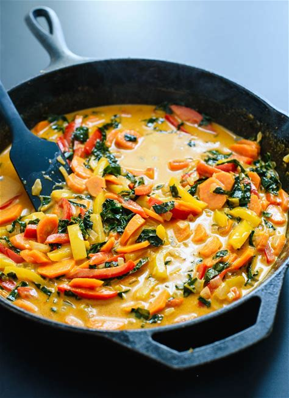

Thai Red Curry

This is a recipe I use when I really want curry but don't want to go out for it, it is easy to make and very delicious.
- 1 ¼ cups
Long-Grain Brown Rice
- 1 tablespoon
Olive Oil
- 1
Small White Onion
- add pinch
Salt
- 1 tablespoon
Fresh Ginger
- 2 cloves
Garlic
- 1
Red Bell Pepper
- 1
Orange
- 3
Carrots
- 2 tablespoons
Thai Red Curry Paste
- 14 ounces
Regular Coconut Milk
- ½ cup
Water
- 1 ½ teaspoons
Turbinado Sugar
- 1 tablespoon
Soy Sauce
- 2 teaspoons
Fresh Lime Juice
- To cook the rice, bring a large pot of water to boil.
Add the rinsed rice and continue boiling for 30 minutes, reducing heat as necessary to prevent overflow.
Remove from heat, drain the rice and return the rice to pot. Cover and let the rice rest for 10 minutes or longer,
until you’re ready to serve. Just before serving, season the rice to taste with salt and fluff it with a fork.
- To make the curry, warm a large skillet with deep sides over medium heat. Once it’s hot, add the oil.
Add the onion and a sprinkle of salt and cook, stirring often, until the onion has softened and is turning translucent,
about 5 minutes. Add the ginger and garlic and cook until fragrant, about 30 seconds, while stirring continuously.
- Add the bell peppers and carrots. Cook until the bell peppers are fork-tender, 3 to 5 more minutes, stirring occasionally.
Then add the curry paste and cook, stirring often, for 2 minutes.
- Add the coconut milk, water, and sugar, and stir to combine. Bring the mixture to a simmer over medium heat.
Reduce heat as necessary to maintain a gentle simmer and cook until the peppers,
carrots have softened to your liking, about 5 to 10 minutes, stirring occasionally.
- Remove the pot from the heat and season with tamari and rice vinegar.
Add salt (I added ¼ teaspoon for optimal flavor), to taste. If the curry needs a little more punch, add ½ teaspoon more tamari,
or for more acidity, add ½ teaspoon more rice vinegar. Divide rice and curry into bowls and
garnish with chopped cilantro and a sprinkle of red pepper flakes, if you’d like.
If you love spicy curries, serve with sriracha or chili garlic sauce on the side.